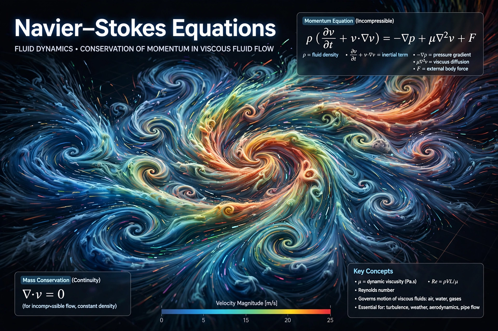

Field: Fluid mechanics
Named for: Claude-Louis Navier, George Gabriel Stokes
Derived: 1822 (Navier), 1845 (Stokes)
Status: Existence and smoothness is a Millennium Prize Problem
The Navier–Stokes equations are partial differential equations that describe the motion of viscous fluid substances. Named after Claude-Louis Navier and George Gabriel Stokes, they arise from applying Newton's second law to fluid motion together with the assumption that the fluid's stress depends linearly on the strain rate (a Newtonian fluid).
For incompressible flow, the momentum equation reads ρ(∂u/∂t + u·∇u) = −∇p + μ∇²u + f, paired with the continuity condition ∇·u = 0, where u is velocity, p pressure, ρ density, and μ dynamic viscosity. The equations model weather, ocean currents, airflow around wings, and blood flow, and underpin computational fluid dynamics.
Whether smooth, physically reasonable solutions always exist in three dimensions — or can develop singularities — is unproven. The Clay Mathematics Institute lists "Navier–Stokes existence and smoothness" among its seven Millennium Prize Problems, with a $1 million prize.